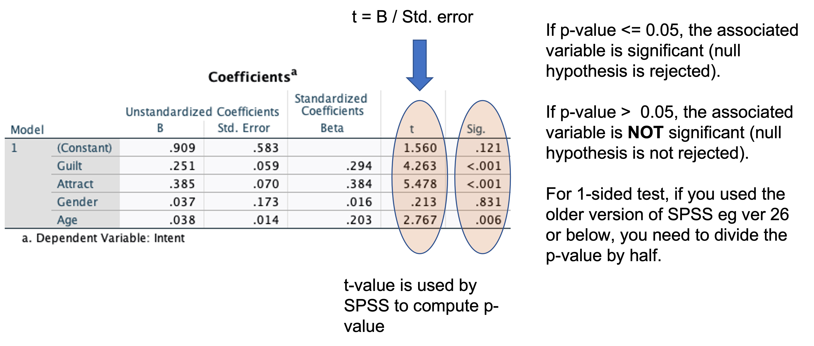
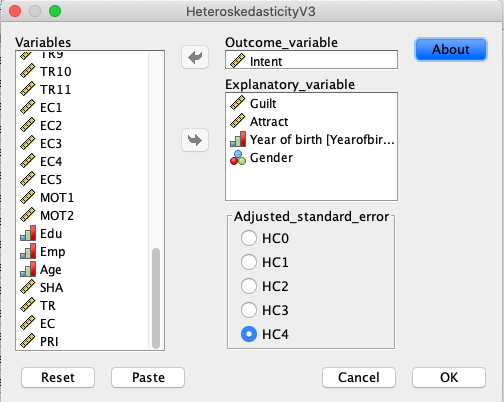

Regression (Week 17)
Data: RobotGLP.sav
- Data is available on Moodle
Learning objectives
The aim of this lab is to help you to use SPSS to conduct regression analysis, which is useful in explaining the relationship between a set of independent variables and a dependent variable.
At the end of this lab, we hope that you will be able to
Understand the meaning of independent and dependent variables
Select appropriate independent variables to explain a dependent variable
Produce and interpret basic SPSS outputs for multiple regression
Understand the meaning of multicollinearity, how to detect and remedy it
FYI, many students of the previous cohorts used regression when they wrote their MSc dissertations.
Why Regression
In marketing research, we often need to determine the impact of a set of marketing variables on one variable – a factor we want to understand or predict. Furthermore, among those variables we may want to find out which variables matter most, and which variables are not so important that we can ignore. Regression analysis can help us findings the answers to these questions.
In this workshop, we want to investigate factors that influence consumers’ decision to join a green loyalty program – This LP encourages behaviours from hotel guests that are good for environment (e.g., reuse towels).

In this lab, we consider the following case. A hotel manager who recently launch a green loyalty program (GLP) wants to know about factors that affect consumers’ intention to join the hotel GLP. The hotel manager decides to develop a survey and asks the hotel’s guests to fill in an offline survey. The survey form was handed in to hotel guests by a frontline service robot (see the image above). The survey contains items to measure the following constructs:
Intention to join the green loyalty program
Anticipated guilt if not joining the green loyalty program
Perceived attractiveness of hotel receptionist
Age
Gender
Anticipated guilt, Perceived Attractiveness, Age, Gender are called the independent variables and Intention to join the green loyalty program is the dependent variable. The notion of the dependent variable comes from our prediction that its value depends on the values of the independent variables. The relationship between Intention to join the green LP the and the four independent variables can be written as:
Intention to join the green LP ~ Anticipated Guilt + Perceived Attractiveness + Age + Gender + error.
You can read the above expression as a consumer’ intention to join the green loyalty program is influenced by the consumer’s anticipated of guilt, perceived attractiveness, age, and gender, and some unknown factors represented by an error term. The relationship can be represented by a mathematical expression as below. The names of the variables are shortened.
\[\begin{equation} Intent = \beta_0 + \beta_1 * Guilt + \beta_2 * Attract + \beta_3 * Age + \beta_4 * Gender. \end{equation}\]where \(\beta_0\), \(\beta_1\), \(\beta_2\), \(\beta_3\), and \(\beta_4\) are parameters that capture the impact of each of the independent variables on intention.
We use regression procedure in SPSS to find out the estimates for all parameters using sample data (\(\beta_0\) is just a constant so it is not of our interest).
Variable Intent, Guilt, and Attract were average scores of a multi-item scale where each item in the scale were measured using a Likert scale ranging from 1 = strongly disagree to 7=strongly agree. Age is a continuous variable, and Gender is a 0,1 variable.
If you want to examine whether Guilt is a significant factor, then you want to test \(H0\): \(\beta_1=0\) against \(H1\): \(\beta_1 \ne 0\). SPSS will report the p-value associated with \(H0\). If p-value is less than 0.05, you reject \(H0\) otherwise retain it. If you reject \(H0\), you can conclude that Guilt is a significant factor that influences intent.
If you hypothesize that Guilt is a significant factor and has a positive impact on satisfaction, then you want to test \(H0\): \(\beta_1=0\) against \(H1\): \(\beta_1 > 0\). SPSS will report the p-value associated with \(H0\). You have to divide the p-value by 2. If the p-value/2 is less than 0.05, you reject \(H0\) otherwise retain it. If you reject \(H0\), you can conclude that Guilt has a significant positive influence on Intent.
Conducting Multiple Regression with SPSS
Open RobotGLP.sav – Thanks to Jingxi for allowing us to use a subset of her data to test the above model.
To conduct a regression analysis in SPSS, click the following: Analyze\(\rightarrow\)Regression\(\rightarrow\)Linear.
Enter Intent into the dependent variable box.
Enter Guilt,Attract, Age,Gender` into the independent variable(s) box.

Click OK
SPSS produces four tables. The first one does not offer much information. Therefore, we focus our attention to the next three tables.
ANOVA table: Is the model meaningful?

This table tells whether or not the model is meaningful. If the sig value is less than 0.05, then the model is meaningful. If p-value is greater than 0.05, then model should be dismissed and don’t interpret other outputs. In this example, the sig. value is less than 0.05; therefore we have a meaningful model. We can proceed with the next output.
- Model Summary table: How good is the model?
Having known the model is meaningful, how do we know whether it is good enough? The Model Summary table provides the answer to this question.

The model summary table tells you how well the independent variables explain variation in the dependent variable. The adjusted \(R^2\) is 0.311 indicating that about 31% of the variation in the intention score is explained by the four independent variables (Guilt, Attract, Age, and Gender). Theoretically, the maximum possible value for adjusted R-square is 100% indicating a perfect model!
Adjusted \(R^2\) is \(R^2\) that is adjusted for the number of independent variables in the model. The more independent variable you have in the model, the larger the \(R^2\) will be. The adjusted \(R^2\) prevents the inflation. You can use the following convention to qualify the impact of the set of the independent variables on the dependent variable1:
\(R^2\) ≥ 0.02 small effect
≥ 0.13 medium
≥ 0.26 large
Knowing the adjusted \(R^2\), indicate the strength of the impact of Guilt, Attract, Age, and Gender.
Maximizing \(R^2\) value should not be your main goal in regression. Do not be tempted to select variables with the aim of increasing \(R^2\) value. \(R^2\) value in social sciences are typically in the range of 0.1 to 0.5. Selecting variables should be motivated by theories.
- Coefficients

This table tells us which of the independent variables significantly explain or predict the dependent variable. In this case three variables significantly explain Intent. These are Guilt, Attract, and Age, whereas Gender is not significant. Furthermore, the standardized beta values tell us which variable has the strongest impact on Intent. In this case Attract is the strongest predictor followed by Guilt and Age.
If you want to make a prediction, use the unstandardized coefficients (B). If someone assigns a rating of three on Guilt, Attract can you predict her intention level? (round-off your answer)
Multicollinearity Problems
High correlation among independent variables is problematic in multiple regression because it is hard for us to determine the individual contribution of each of the independent variables in the model. For example, if Attract is highly correlated with Guilt, then we cannot conclude that Attract have the strongest influence on Intent because Guilt also gives contribution to the magnitude of Attract-Intent relationship (it looks stronger than it should be). In other words, the coefficients associated with the regression estimates are biased – not the same as their true population values.
The situation where an independent variable is highly correlated with another variable is referred to as multicollinearity problem. To diagnose whether multicollinearity exists, you can check it in two ways.
- Inspect the correlation coefficient among the independent variables. To do correlation analysis in SPSS, follow this step: Analyze\(\rightarrow\)Correlation\(\rightarrow\)Bivariate. If two variables is highly correlated with the correlation coefficient is larger than 0.9, your model may suffer from a multicollinearity problem. In practice, you should be cautious, if the correlation is 0.7.
Check the correlation coefficients among the predictors in the model.
- Rerun your regression.
Click: Analyze\(\rightarrow\)Regression\(\rightarrow\)Linear.
Click
Statisticsoptions.Select
Collinearity diagnostic. ClickContinueand ClickOK.Inspect the VIF (Variance Inflation Factor values in the output.
Multicollinearity exists if VIF (variance inflation factor) > 10.

See the above output, does the model suffer from a multicollinearity problem?
If Multicollinearity Exists
What should you do if multicollinearity exists?
You can deal with it using one of the following techniques:
Omit one or more highly correlated independent variables
Create a composite variable e.g., by taking the average score of two variables if the two variables causes multicollinearity averaging or using Principle Component Analysis (beyond the scope of our workshops)
Use the model that suffers from multicollinearity but for prediction purposes only.
Collect more samples
Heteroskedasticity Problem
One of the assumptions in regression is that residuals or errors should be constant across any values of independent variables. This is referred to as the homoskedasticity assumption. The opposite of homoskedasticity is heteroskedasticity where residuals are not constant (i.e., heteroskedastic errors) (learn how to pronounce these words, it took me a while to get used to them!).
If heteroskedasticity exists, hypotheses tests about the regression parameters are not correct anymore. See lecture slide for more details. One of the recommended techniques to handle heteroskedasticity is to adjust the standard errors of the regression estimates (i.e., values in the Std. error column in the SPSS output).
Rerun your regression with heteroskedasticity-adjusted standard errors and compare the results with the original regression you had previously conducted. Continue reading the text below.
To rerun your regression, install and use the ‘HeteroskedasticityV3.spd’ macro developed by yours truly2. The macro produces regression outputs with/without heteroscedasticity-adjusted standard errors.
Installing the HeteroskedasticityV3 Macro
SPSS in the Lab PCs or from cloud may not permit you to install the add-on macro because you do not have an admin right to do so. However, it is worth trying to install the macro, it may work! Alternatively, you need to install the macro in your personal PC where you have an admin right to install it.
You can download the macro from these websites:
Click the green button
Code, and selectDownload ZIP.Go to the download folder on your PC or laptop.
Locate the HeteroskedasticityV3.spd and install.
If you have an admin right, double click the file, and follow the instruction on your screen
If the above does not work, click Extensions\(\rightarrow\)Utilities\(\rightarrow\)Install Custom Dialog. Locate the file, and install.


If you do not manage to install the macro. Do not panic! There is another option without installation – see below:
Running the Macro without Installation
You can run the macro without having it installed on your machine. Follow these steps:
Go back to the download folder in your PC where you have downloaded several files from this page https://github.com/ahmaddaryanto/Heteroskedasticity (see Section 1.7)
HeteroskedasticityV3.sps was included when you download the files from the github page.
Open the HeteroskedasticityV3.sps on your SPSS – it will be opened as a syntax file,
Run the syntax file (highlight all the lines, run the selection button, i.e., the green button).
Next, open this file: Runthemacro.sps.
Change the DV and IVs according to your model specifications, and
Run the file.